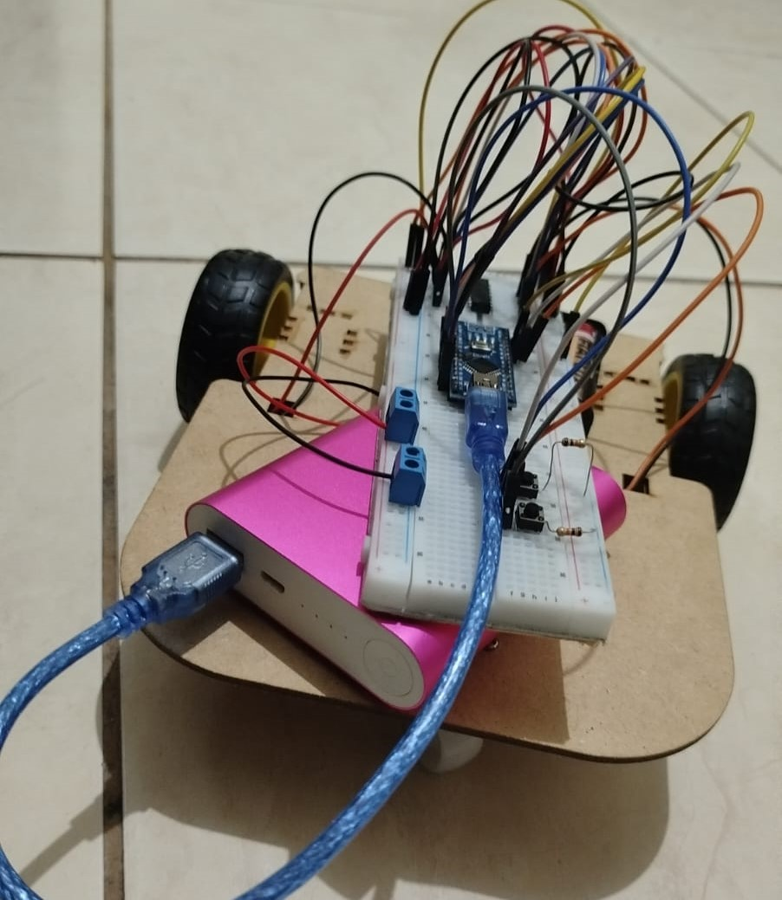
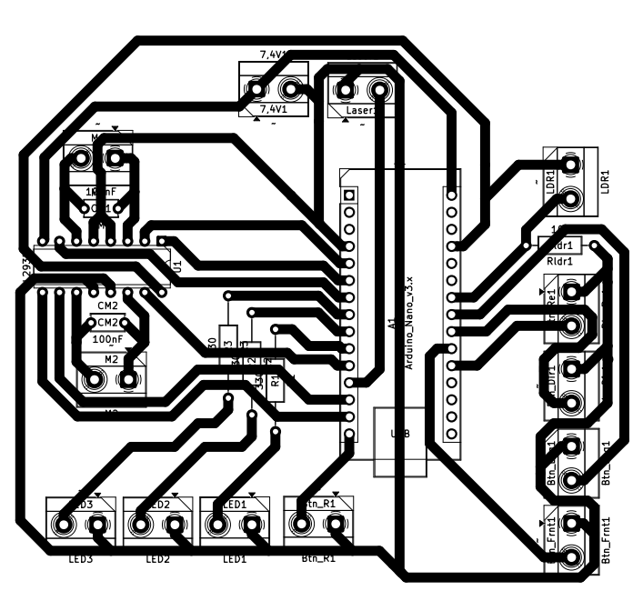

Carregando...
Procurando...
Nenhuma entrada encontrado
Gigantes de MDF
Sobre o projeto
O projeto Gigantes de MDF foi desenvolvido como parte da disciplina de Programação de Hardware, com o objetivo de aplicar na prática os conhecimentos adquiridos durante o semestre, especialmente na programação de microcontroladores, no controle de componentes eletrônicos e na integração entre software e hardware.
A proposta é um duelo entre robôs móveis: cada robô é controlado por botões, dispara um laser vermelho e tem um sensor de luz (LDR) que detecta o laser do adversário. Cada acerto tira uma das três vidas do robô, indicadas por LEDs. O foco do trabalho é a programação direto nos registradores do ATmega328P, sem bibliotecas prontas.

Primeiro milestone: quase um desastre, mas já andou
Como o robô funciona
- Movimento: o robô anda para frente, para trás e gira para a esquerda e para a direita enquanto o botão correspondente estiver pressionado. Se mais de um botão de movimento for apertado ao mesmo tempo, o robô para.
- Laser: fica 1 segundo ligado e 1 segundo desligado, controlado por um timer.
- Acerto: quando o LDR detecta o laser do adversário, o robô perde uma vida (um LED apaga), gira no próprio eixo e fica 5 segundos parado, com os motores e o receptor desativados.
- Eliminação: com as três vidas esgotadas, o robô fica parado até o botão de reset ser apertado, que devolve as três vidas.
Hardware
O circuito foi simulado no Tinkercad e depois montado em uma PCB projetada no KiCad.
| Componente | Função |
|---|---|
| Arduino Nano (ATmega328P, 16 MHz) | microcontrolador |
| L293D | ponte H que aciona os dois motores |
| 2 motores DC | movimento do robô |
| Laser vermelho de 5 mW | arma |
| LDR + resistor de 10 kΩ | receptor do laser (divisor de tensão lido pelo ADC) |
| 3 LEDs + resistores de 330 Ω | vidas do robô |
| 5 botões | frente, trás, esquerda, direita e reset |
| 2 capacitores de 100 nF | filtro de ruído nos terminais dos motores |
| Bateria | 2 células de lítio 18650 em série (7,4 V) ou 4 pilhas alcalinas AA |
Ligação dos pinos (esquemático v2.0)
| Função | Pino do Nano |
|---|---|
| Motor esquerdo: habilitação (PWM) / sentido | D3 / D2 e D4 |
| Motor direito: habilitação (PWM) / sentido | D11 / D10 e D8 |
| Botões: frente / trás / esquerda / direita | A2 / A1 / A4 / A3 |
| Botão de reset | D12 |
| LDR (entrada analógica) | A5 |
| Laser | D9 |
| LEDs de vida | D5, D6 e D7 |

Circuito da versão 2.0 no Tinkercad


Esquemático (ligações do Nano) e PCB da versão 2.0, feitos no KiCad
A evolução do esquemático e da PCB, com as versões e os motivos de cada mudança, está em HISTORICO_PLACA.md.
Software
O firmware é escrito em C/C++ para o microcontrolador AVR, direto nos registradores: não usa funções do Arduino como digitalWrite, analogWrite ou millis.
| Periférico | Uso |
|---|---|
| Timer1 (modo CTC) | base de tempo de 1 ms e controle do laser (1 s ligado, 1 s desligado) |
| Timer2 (Fast PWM de 8 bits) | PWM dos dois motores, por volta de 976 Hz |
| ADC (canal 5) | leitura do LDR |
| USART0 | mensagens de depuração a 115200 baud (valor do LDR, vidas e eventos) |
O programa é uma máquina de estados com três estados: ativo (controle manual e leitura do LDR), atingido (giro e pausa de proteção) e eliminado (aguarda o reset).
Parâmetros ajustáveis
Ficam no começo do código. O limiar do LDR e o tempo do giro foram medidos e ajustados na placa:
| Constante | Valor | Significado |
|---|---|---|
| VELOCIDADE | 200 | duty do PWM (0 a 255) |
| TEMPO_GIRO_MS | 500 | duração do giro após um acerto |
| TEMPO_PROTECAO_MS | 5000 | tempo com motores e receptor desativados |
| LDR_LIMIAR_DISPARO | 800 | leitura do ADC (0 a 1023) que indica laser |
| LDR_CONFIRMACOES | 6 | leituras seguidas (uma a cada 5 ms) para confirmar o acerto |
| DEBOUNCE_MS | 20 | tempo de estabilidade dos botões de movimento |
Estrutura do repositório
| Item | Conteúdo |
|---|---|
| script/ | código do firmware |
| assets/ | imagens do projeto (fotos, esquemático, PCB) |
| HISTORICO_PLACA.md | histórico do esquemático e da PCB |
Documentação do software
Os comentários do código seguem o padrão do Doxygen (/** ... */, com @brief, @param e @return). A documentação gerada fica na pasta docs/: abra o docs/index.html no navegador. A página inicial dela é este próprio README.
Para gerar de novo (por exemplo, depois de mudar o código), na raiz do projeto:
- doxygen Doxyfile
- copie a pasta assets para dentro de docs (as imagens do README usam o caminho assets/...).
Milestones
| Data | Entrega |
|---|---|
| 05/10/2026 | estrutura funcional do robô, andando com baterias |
| 26/10/2026 | circuito com motores, sensor e laser ligados ao microcontrolador |
| 23/11/2026 | apresentação do projeto final |
Considerações finais
O desenvolvimento deste projeto permite consolidar os conhecimentos de programação de hardware por meio de uma aplicação prática, aproximando a programação do funcionamento de um sistema físico real.
A proposta prioriza a programação e a integração entre os componentes eletrônicos, mantendo a complexidade mecânica dentro do necessário para o funcionamento do robô. Dessa forma, o grupo busca desenvolver uma solução funcional, organizada e de fácil compreensão, aplicando os conceitos estudados ao longo da disciplina.